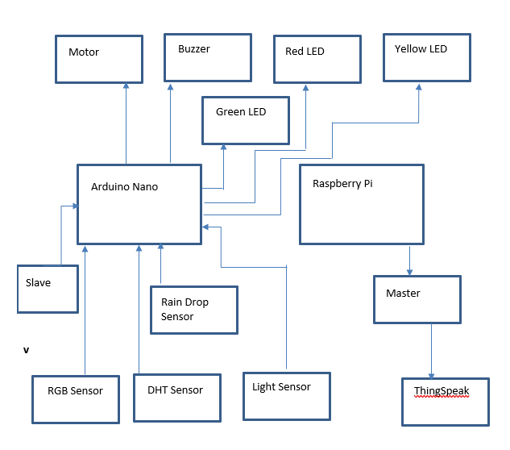
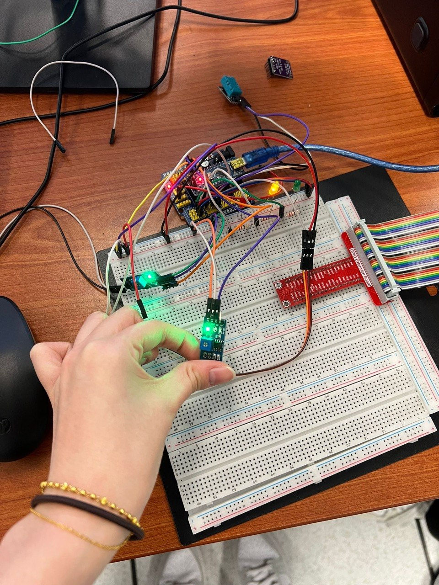
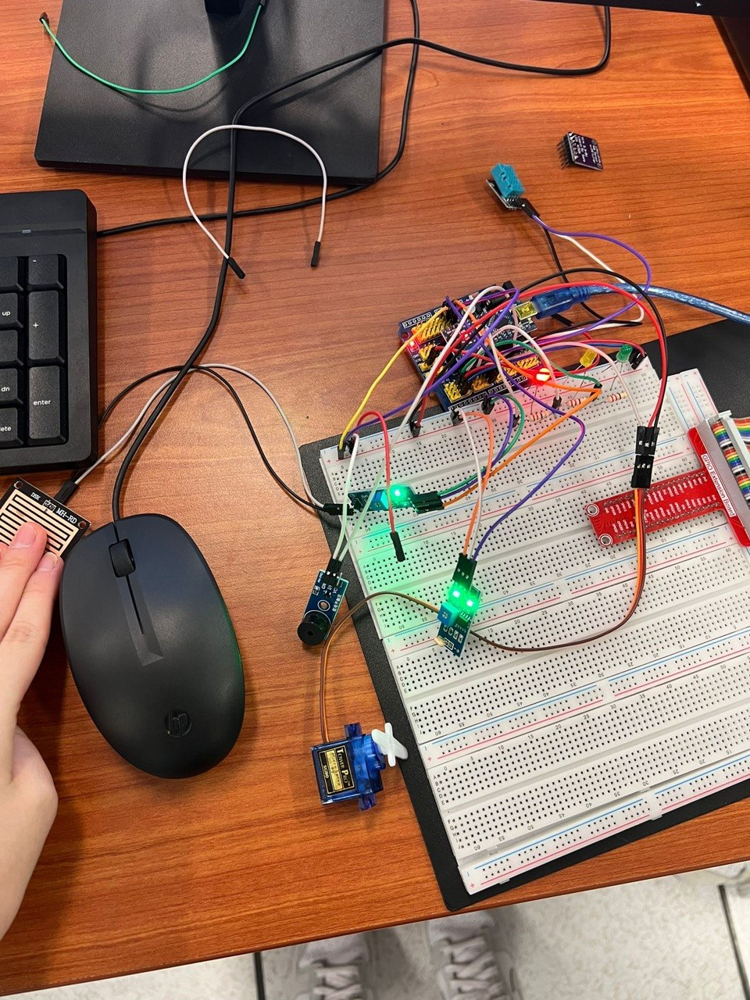
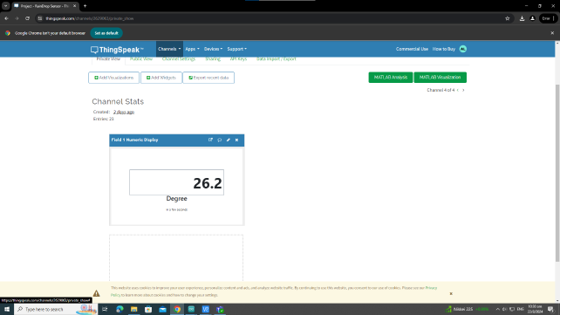

Rain Detection
An analogue raindrop sensor continuously monitors for the presence of water and triggers the rain-alert state when the configured threshold is reached.
05 / IOT & EMBEDDED SYSTEMS
An IoT weather-monitoring prototype combining rain, light, temperature and humidity sensing with automatic alerts, servo control and ThingSpeak cloud monitoring.

PROJECT INFO
The Raindrop Detection & Weather Alert System is an IoT prototype designed to detect unexpected rainfall and alert users before outdoor items such as laundry become wet. The system combines a raindrop sensor with environmental sensors and multiple actuators to respond automatically to changing weather conditions.
WHAT THE SYSTEM DOES
An analogue raindrop sensor continuously monitors for the presence of water and triggers the rain-alert state when the configured threshold is reached.
A light sensor allows the system to distinguish between normal and dark environmental conditions.
A DHT11 sensor measures temperature and humidity as additional environmental information.
Green, yellow and red LEDs provide immediate visual feedback for normal, dark and rain-detected states.
A buzzer produces an audible warning when rainfall is detected.
The servo motor automatically moves when rain is detected, demonstrating how the system could control a physical mechanism in response to weather.
Sensor information is transmitted through a Raspberry Pi and uploaded to ThingSpeak for remote monitoring.
SYSTEM DEVELOPMENT
The prototype combines Arduino-based sensing and actuator control with Raspberry Pi communication and ThingSpeak cloud monitoring.

The system integrates environmental sensors with an Arduino Nano. The Arduino processes the incoming readings and controls the LEDs, buzzer and servo motor. A Raspberry Pi acts as the gateway between the sensor system and the ThingSpeak cloud platform.
When no rain is detected and the environment is not dark, the green LED remains illuminated to indicate normal environmental conditions.

The light sensor continuously monitors ambient brightness. When the environment becomes dark without rain being detected, the yellow LED is activated to indicate the change in lighting conditions.

When the raindrop sensor detects water, the system enters its rain-alert state. The red LED activates, the buzzer sounds and the servo motor moves to 180 degrees, demonstrating an automatic physical response to rainfall.

The Raspberry Pi receives sensor information through serial communication and uploads the data to ThingSpeak, allowing environmental readings to be viewed through a cloud-based dashboard.
FINAL PROTOTYPE VIDEO
The demonstration shows the physical prototype responding to environmental conditions using sensors, LEDs, a buzzer and servo control.
TESTING & RESULTS
Green LED activated; system remained in normal state
Yellow LED activated to indicate low-light conditions
Red LED and buzzer activated; servo moved to 180 degrees
Rain alert stopped and servo returned to its initial position
Environmental data successfully displayed through the cloud dashboard
DEBUGGING & IMPROVEMENTS
The raindrop sensor initially failed because VCC and GND were connected incorrectly. Correcting the wiring restored sensor operation.
The yellow LED remained on because the light-threshold comparison in the Arduino code was reversed. Correcting the Boolean condition resolved the issue.
The buzzer activated when rain was detected but the red LED did not. The LED output logic was corrected from LOW to HIGH.
The ThingSpeak dashboard initially failed to display uploaded data. The Raspberry Pi code was corrected and the temperature reading was successfully displayed.
The buzzer initially failed because it was connected incorrectly. The wiring was corrected and the audible alert operated successfully.
Unexpected rainfall can cause outdoor laundry to become wet when users are indoors and unaware that weather conditions have changed. The project aimed to create an automated monitoring system capable of detecting rain and providing immediate visual, audible and physical responses.
An Arduino Nano processes readings from a raindrop sensor, light sensor and DHT11 temperature and humidity sensor. The Arduino uses threshold-based logic to determine environmental conditions. Different LEDs indicate normal, dark and rainy conditions, while detected rain activates a buzzer and moves a servo motor. Sensor information is transmitted to a Raspberry Pi and uploaded to ThingSpeak for cloud-based monitoring.
The completed prototype successfully detected changes in rainfall and ambient lighting and responded through visual indicators, an audible alarm and servo movement. The project also demonstrated an end-to-end IoT workflow by connecting physical environmental sensing and embedded control with Raspberry Pi communication and ThingSpeak cloud monitoring.